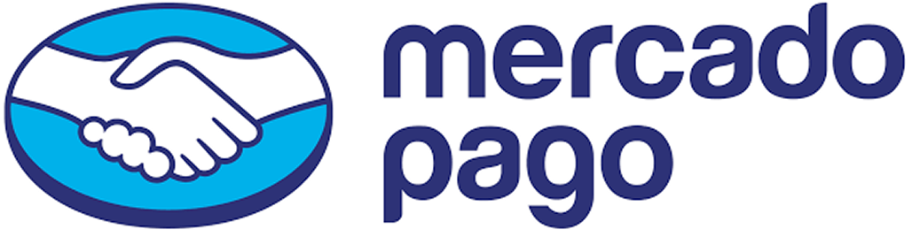
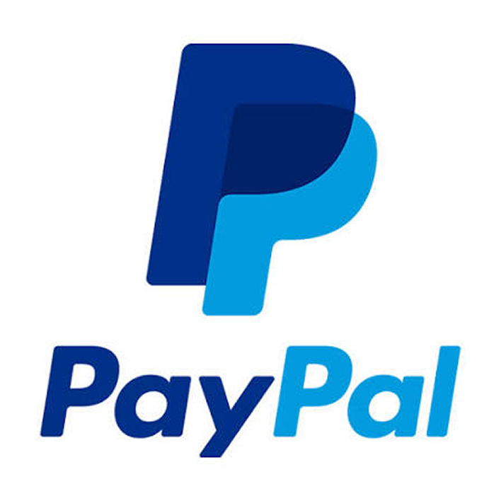

Donaciones
Con tu aporte económico nos ayudás a cubrir gastos veterinarios, medicación y cuidados diarios.
Con tu aporte económico nos ayudás a cubrir gastos veterinarios, medicación y cuidados diarios.
Llevá tus bolsas vacías de Old Prince o Kongo a Somos tu Pet Shop: se reciclan y las canjeamos por alimento balanceado.
Comprá nuestras galletitas veganas solidarias; todo lo recaudado se destina a alimento, veterinaria y cuidado de los rescatados.

Alias solidario: callejeritos.gonnet
Informar transferencia
Alias internacional: callejeritos.gonnet
Donar desde el exteriorEstos son los medicamentos e insumos que más necesitamos:
Amoxicilina Clavulánico comprimidos de 250, 500, 750 o 1 gr, y también inyectable. Cefalexina comprimidos por 250, 500 o 1 gr. Ceftriaxona inyectable. Toltrazol, Desparasitantes (Total full, Meltra plus, Novasol, Albendazol), Metronidazol, Enrofloxacina, Contal, Ivermectina, Vincristina, Clindamicina, Poulferon o Inmunogam, Ecthol ambiental, Amitraz, Artrin o Geriox, Vendas tipo cambridge, Telas adhesivas de al menos 2 cm de ancho.
¡Doná ahora!